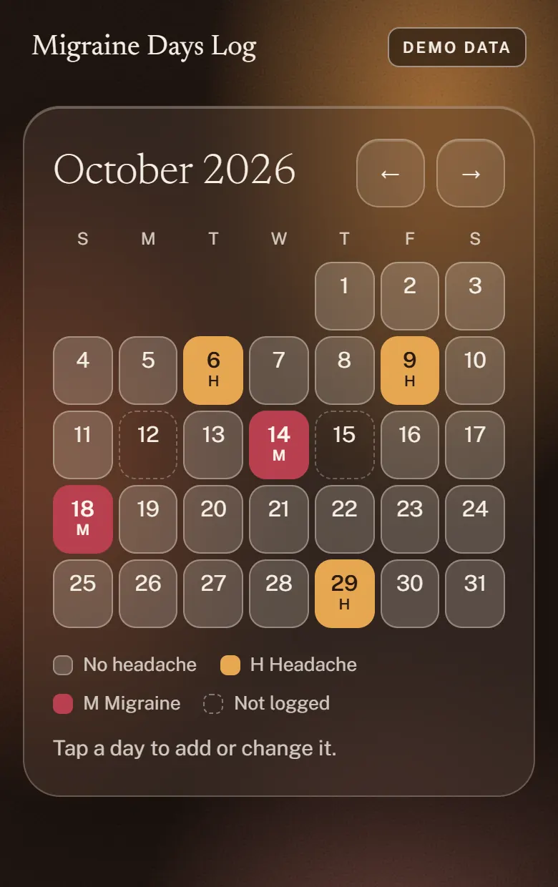
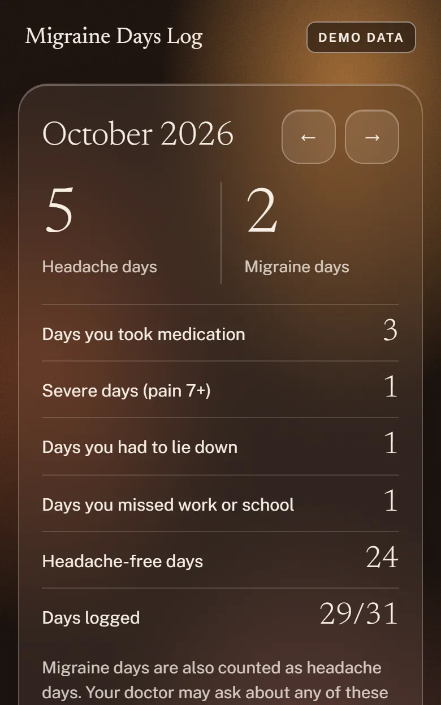

"How many headache days a month?" Most people guess. This is a headache diary for your phone that takes one tap a day and does the counting, so next time you can answer with a number.
Start logging, free See the full log, $19
No account. No sign-up. Your entries are saved only on your device; we never receive them.

Doctors, and the insurance forms for preventive migraine drugs, tend to come back to the same handful of counts:
A notebook can hold all of that. Adding it up the night before an appointment is the part nobody does. The log adds it up as you go.
Open it. Tap No headache, Headache or Migraine. That is a complete entry. If it was a bad day you can add the pain level, whether you took something, whether you had to lie down, and whether you missed work or school.
Clear days count too, so you log those with one tap. A day you skip is marked "not logged". It is never quietly counted as headache-free, which would make your numbers look better than they are.
It is deliberately small. There are no trigger checklists and no 40 fields to fill in while your head hurts.

What the printed page looks like. These numbers are made up.
| Month | Headache days | Migraine days | Medication days | Days logged |
|---|---|---|---|---|
| June | 14 | 10 | 9 | 30 of 30 |
| July | 12 | 8 | 8 | 31 of 31 |
| August | 7 | 4 | 5 | 29 of 31 |
| Average per month | 11 | 7.3 | 7.3 |
$19
One payment. No subscription, no account. You get an unlock code by email and type it into the app once.
Buy the full log Try the free log first
Not sure? Open the free log, go to More, and tap "Load DEMO data". You can click through every paid screen with sample entries before you spend anything. If you buy it and it isn't useful, reply to the purchase email within 14 days for a refund.
Your entries are saved only in your browser, on your own device. We never receive them. The app has no account, no analytics and no ad trackers. The web host that delivers the page sees your IP address, like any website, and anyone who can unlock your phone can open the log.
The trade-off is that we can't recover your data. Your log can be erased if you clear browsing data, use private mode, switch browser or phone, or (on iPhone) don't open it for a while. The app reminds you to download a backup; do it weekly.
No. It runs in your browser. Use "Add to Home Screen" and it opens like an app and works without a connection.
No. It counts what you enter and prints it clearly. It doesn't diagnose, interpret or suggest treatment. That conversation belongs with your doctor.
Nobody can promise that, and we don't. Approval depends on your plan and your doctor's paperwork. What the log does is give you accurate counts to bring to it.
I'm Fiona, an independent maker. I'm not a doctor and I don't have migraines. I built this from what neurologists' intake forms and insurers' approval forms ask patients for, after reading how many people keep these counts in paper notebooks.